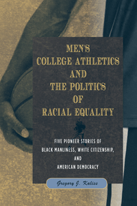

<body bgcolor="#FFFFFF" text="#000000" link="#0000FF" vlink="#CC0000" alink="#CC0000"><center><hr width="350" size="1" align="center" noshade>Profiles of college athletes and teams that challenged the color line in America<hr width="350" size="1" align="center" noshade><p><a href="https://cdcshoppingcart.uchicago.edu/Cart/ChicagoBook.aspx?ISBN=9781439908563&&PRESS=temple" target="_top">Buy this book!</a> | <a href="https://cdcshoppingcart.uchicago.edu/Cart/Cart.aspx?PRESS=temple" target="_top">View Cart</a> | <a href="https://cdcshoppingcart.uchicago.edu/Cart/Cart.aspx?PRESS=temple" target="_top">Check Out</a></p><p></p></center><!--none//--><h1>Men's College Athletics and the Politics of Racial Equality</h1>
<H2>Five Pioneer Stories of Black Manliness, White Citizenship, and American Democracy</H2>
<h3>Gregory J. Kaliss</h3>
<P>cloth 1-4399-0856-7 $60.50, Jun 12, <FONT COLOR=#990033>Available</FONT>
<br>paper 1-4399-0857-5 $29.95, Jan 14, <FONT COLOR=#990033>Available</FONT>
<br>Electronic Book 1-4399-0858-3 $29.95 <FONT COLOR=#990033>Available</FONT>
<BR> 248 pp
6x9
</P><BLOCKQUOTE><I>"</I>Men’s College Athletics and the Politics of Racial Equality<I> adds significantly to our understanding of the interconnection among sports, race, and American culture. Through five case studies, Kaliss provides important information on a select number of outstanding African American athletes who played for various predominantly white universities in different sections of the country. The case studies provide not only details about the lives and careers of such athletes as Paul Robeson, Woody Strode, Charlie Scott, and Wilt Chamberlain but also important insights into the changing pattern of sports and the influence of race over much of the twentieth century. Kaliss’s writing style, research methodology, and cogent analyses and interpretations provide a nuanced examination of African American participation in predominantly white college sports."</I><br>&#151<b>David K. Wiggins</b>, Professor and Director, School of Recreation, Health, and Tourism, George Mason University <I></I></BLOCKQUOTE>
<P>College sports have provided a compelling means to the discussion of issues regarding racial equality and fairness in American life. As previously-white institutions of higher learning gradually (and grudgingly) opened their playing fields to African American athletes in men's basketball and football, black and white spectators interpreted mixed-race team sports in often contradictory ways. In <i>Men's College Athletics and the Politics of Racial Equality</i>, Gregory Kaliss offers stunning insights into Americans' contested visions of equality, fairness, black manhood, citizenship, and an equal opportunity society.
<P>Kaliss looks at Paul Robeson, Kenny Washington, Woody Strode, Jackie Robinson, Wilt Chamberlain, Charlie Scott, Bear Bryant, John Mitchell, and Wilbur Jackson to show how Americans responded to racial integration over time. <i>Men's College Athletics and the Politics of Racial Equality</i> reveals that as fans, media members, university students, faculty, and administration—black and white—discussed the achievements and struggles of these athletes, they inevitably talked about much more than what occurred on the field.
<BR>&nbsp;<h2>Excerpt</h2><P>Excerpt available at <a href="http://www.temple.edu/tempress">www.temple.edu/tempress</a></p>
<BR>&nbsp;<h2>Reviews</h2>
<p><I>"Kaliss illuminates alternative opinions on integrated sports in a well-written and thoroughly researched book that validates many of the alternative assertions and conclusions about race relations in the United States. He manages to situate the subject matter in a credible discussion of society and history, thus furthering our understanding of racial beliefs and anxieties about integration. Kaliss demonstrates that while both white and black presses were enthusiastic about sports for different reasons during different periods, they gave the integration of college sports vastly different meanings."</I><br>&#151<b>Dexter Blackman</b>, Assistant Professor of History, Loyola Marymount University
<p><i>"Kaliss examines five stories of pioneering African American athletes.... explaining how the athletes sought to achieve full citizenship through their athletic achievements.... He argues that their responses reveal much more than just what occurred on the playing field.... Summing Up: Recommended."</i> <br>&#151<b><i>Choice</i></b>
<p><i>"In his ambitious </i>Men’s College Athletics and the Politics of Racial Equality<i>, Gregory J. Kaliss examines the intersection of race, politics, and manliness in American intercollegiate athletics in the twentieth century. Kaliss’s book stands apart from other works that have tackled those complex issues because of his case study approach, his particular scholarly focus, and the lengthy coverage he gives to his subject matter.... Kaliss offers detailed analyses.... The different strands of Kaliss’s analysis come together best in his case study on Robeson.... In two other strong case studies Kaliss focuses on the 1939 University of California, Los Angeles, football team, which featured Jackie Robinson, and on Wilt Chamberlain’s basketball career at the University of Kansas.... Overall, Kaliss makes a valuable addition to the scholarship on American sports. His work underscores the value of using newspapers, in particular black newspapers, in the pursuit of scholarly analysis."</i> <br>&#151<b><i>Journal of American History </i></b>
<p><i>"[A] careful study of five significant episodes in the racial integration of college football and basketball.... The five episodes selected by the author fit together nicely in chronological, geographical, and thematic progression.... Kaliss deserves praise for attempting to do more than merely chronicle the triumphs and travails of racial pioneers....[T]he book is a timely reminder that racial barriers in athletics were not exclusive to the South, and it makes a useful contribution to the study of college sports integration."</I>
<br>&#151<b><I>American Historical Review</I></b>
<p><i>"[A] complex and nuanced study, Kaliss clearly shows that there were significant regional and chronological variations in the reactions to integration.... Kaliss makes his case convincingly."</i> <br>&#151<b><i>American Studies Journal</i></b>
<p><i>"</i>Men’s College Athletics and the Politics of Racial Equality<i> is a highly engaging and insightful study that situates these black athletes in a wider cultural context and that is able to demonstrate what they represented for different sections of society."</i> <br>&#151<b><i>Men and Masculinities</i></b>
<BR>&nbsp;<h2>Contents</h2><P>
<p>Acknowledgments
<br>Introduction: College Sports, “Fair Play,” and Black Masculinity
<br>1. “Our Own ‘Roby’” and “the Dark Cloud”: Paul Robeson at Rutgers, 1915–1919
<br>2. “Harbingers of Progress” and “the Gold Dust Trio”: Kenny Washington, Woody Strode, Jackie Robinson, and the 1939
UCLA Football Team
<br>3. “A First-Class Gentleman” and “That Big N——r”: Wilt Chamberlain at the University of Kansas, 1955–1958
<br>4. “Our Colored Boy” and “Fine Black Athletes”: Charlie Scott at the University of North Carolina, 1965–1970
<br>5. “Those Nigras” and “Men Again”: Bear Bryant, John Mitchell, and Wilbur Jackson at the University of Alabama, 1969–1973
<br>Conclusion: What We Talk about When We Talk about Sports
<br>Notes
<br>Bibliography
<br>Index
</P><BR>&nbsp;<H2>About the Author(s)</H2>
<P><b>Gregory J. Kaliss</b> is Research Associate in American Studies at Franklin and Marshall College and coeditor of volume 9 of the <i>Frederick Law Olmsted Papers Project</i>.</P>
<BR><H2>Subject Categories</H2>
<p><A HREF="/tempress/sports.html" TARGET="_top">Sports</a>
<BR><A HREF="/tempress/african.html" TARGET="_top">African American Studies</a>
<BR><A HREF="/tempress/american.html" TARGET="_top">American Studies</a>
</p>
<p align="center"><a href="https://cdcshoppingcart.uchicago.edu/Cart/ChicagoBook.aspx?ISBN=9781439908563&&PRESS=temple" target="_top">Buy this book!</a> | <a href="https://cdcshoppingcart.uchicago.edu/Cart/Cart.aspx?PRESS=temple" target="_top">View Cart</a> | <a href="https://cdcshoppingcart.uchicago.edu/Cart/Cart.aspx?PRESS=temple" target="_top">Check Out</a></p><p><font face="Arial" size="1"><a href="copyright.html" onMouseOver="window.status='Web Copyright Policy';return true;" onMouseOut="window.status=''" title="Web Copyright Policy">&copy;</a> 2015 <a href="http://www.temple.edu" target="new" onMouseOver="window.status='Link to Temple University home page';return true;" onMouseOut="window.status=''" title="Link to Temple University home page">Temple University</a>. All Rights Reserved. http://www.temple.edu/tempress/titles/2204_reg.html</font></p>